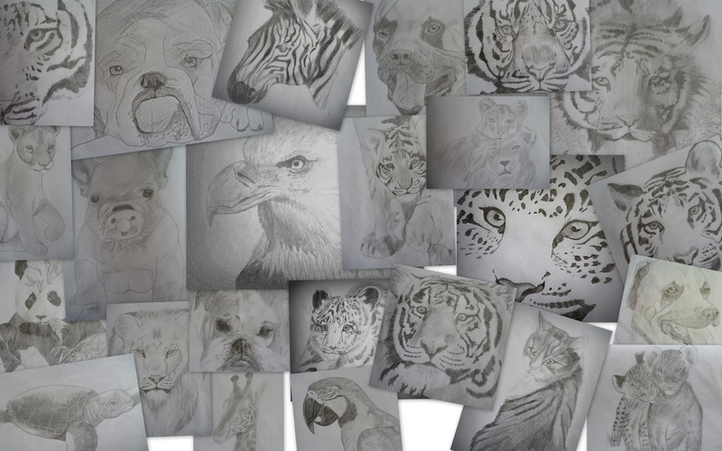

Je m'appel Emma HEITZMANN, née en 1997 à Mulhouse.
Peindre n'est pas ma vocation mais ma passion. Je suis ingénieure spécialisée dans les technologies pour la santé.
Je peins pour m'évader à mes heures perdues et j'avoue que cela m'a bien aidé au cours des derniers confinements.
Mon amour pour l'art à toujours fait parti de moi, dès mon plus jeune âge.
Je me suis lancée de manière plus sérieuse dans le dessin lors de l'été 2012, j'avais 14 ans.
Ensuite, je dessinais moins souvent, essentiellement dans le train ou l'avion.
Je n'avais jamais pris de leçon mais j'étais déjà à l'époque plutôt douée.
J'avais pour seul attrait le dessin d'animaux et m'inspirais de photos.
En 2017, après une longue pause sans aucune expression de mon art depuis plusieurs années,
je me suis lancée du jour au lendemain dans la peinture.
Jusqu'ici, l'art était pour moi un passe temps, un divertissement ou encore une passion.
Après mon emménagement dans un premier appartement, j'ai commencé à peindre avec plus d'enthousiasme afin d'utiliser mes œuvre pour décorer mon intérieur.
Mes proches ont alors commencé à me solliciter pour décorer le leur.
L'appréciation de mon art auprès de mes proches me laisse penser que cela pourrait intéresser d'autres personnes, comme vous par exemple.
Aujourd'hui, j'ai choisi de partager mon art avec vous via cette page en espérant en inspirer certain d'entre vous.
Ou peut-être que ce sont vos retours qui m'inspireront.
Mes styles
Le dessin

Dessins réalisés en 2012-2013
Comme toute novice, j'ai d'abord commencé par de simples dessins au crayon de papier sur feuilles A4 blanches.
En 2018, après 3 ans sans aucune création de dessin, j'ai débuté de nouvelles œuvres au stylo en m'appropriant un nouveau style inspiré de la culture Aztèque et leurs symboles Maya.
Il s'agit d'un art plutôt simple qui ne demande pas énormément de technique mais surtout de la patience.
En 2019, j'ai finalement repris le dessin au crayon à papier mais cette fois j'ai inversé les couleurs : crayon blanc sur fond noir.
Pour cela, je me suis inspirée de mes premiers dessins, réalisés en 2012-2013, qui représentait la plus part du temps des félins. J'ai donc repris ce style.
J'étais assez surprise de voir que je n'avais pas perdu mon talent après tant d'année sans crayonner. Au contraire, j'avais même progressée sans aucun effort.
Pour illustrer : en comparant le tigre qui était ma première œuvre au crayon depuis plus de 5 ans sans avoir dessiné dans ce style,
et le léopard réalisé quelques mois après avoir fini le tigre, nous pouvons observer sans difficulté une monté en compétences.
Comme quoi il est bon de pratiquer sans relâche pour progresser. Cela s'applique je pense à toute pratique artistique, physique ou intellectuelle.
J'aime le dessin au stylo pour avoir un tracé précis et bien démarqué du support.
J'ai également expérimenté la craie sur papier noir pour imiter les ardoise présentées dans des bars ou restaurants.
Cependant, pour un dessin rempli de détails, contrastes, dégradés ou textures, le crayon reste un meilleur outil.
J'ai une préférence pour le crayon car cela me rappelle mes début dans le vaste domaine qu'est l'art sur papier.
J'aime prendre du recul sur mes anciennes œuvres et observer mon progrès dans les détails des dessins.
La peinture
Mes premiers essais en peinture furent réalisés à l'aquarelle car j'ai une préférences pour les couleurs claires, et surtout,
je préfère avoir un trait de pinceau léger et une peinture bien diluée.
De plus, il est très facile de réaliser tout les mélanges de couleurs possibles avec une palette basique.
Il s'agit aussi d'une des peintures surement les moins chères car finalement on en utilise très peu pour réaliser une œuvre.
Ce que j'apprécie par-dessus tout avec l'aquarelle, c'est le dégradé de couleurs qui se forme au contact du pinceau sur une feuille préalablement mouillée.
Après avoir expérimenté différents styles à l'aquarelle, j'ai fini par me tourné vers l'art abstrait. Toutefois, je trouve que l'aquarelle n'est pas très adaptée à cette forme de peinture.
Je me suis donc intéressée aux encre à alcool avec des premiers essais en 2020.
Je suis particulièrement fascinée par les encres métalliques et la façon dont elles se déploient autour de différentes tâches d’encre.
Observer l'encre s'écouler comme un fluide à travers le tracé d'alcool sur la feuille est carrément hypnotisant pour moi.
J'apprécie le défi qu'est d'essayer de contrôler le mouvement des encres en utilisant mes mains, la gravité, ou ma propre respiration.
Ce qui m'attire dans l'art abstrait est de pouvoir laisser la liberté à chacun de visualiser, d'imaginer ou d'interpréter différemment l'œuvre.
C'est d'ailleurs l'une des parties les plus gratifiantes de la création d'art abstrait.